Ansible and ServiceNow Part 3, Making outbound RESTful API calls to Red Hat Ansible Tower
Ansible and ServiceNow Part 3, Making outbound RESTful API calls to Red Hat Ansible Tower
Red Hat Ansible Tower offers value by allowing automation to scale in a checked manner - users can run playbooks for only the processes and targets they need access to, and no further.
Not only does Ansible Tower provide automation at scale, but it also integrates with several external platforms. In many cases, this means that users can use the interface they are accustomed to while launching Ansible Tower templates in the background.
One of the most ubiquitous self service platforms in use today is ServiceNow, and many of the enterprise conversations had with Ansible Tower customers focus on ServiceNow integration. With this in mind, this blog entry walks through the steps to set up your ServiceNow instance to make outbound RESTful API calls into Ansible Tower, using OAuth2 authentication.
The following software versions are used:
- Ansible Tower: 3.4, 3.5
- ServiceNow: London, Madrid
If you sign up for a ServiceNow Developer account, ServiceNow offers a free instance that can be used for replicating and testing this functionality. Your ServiceNow instance needs to be able to reach your Ansible Tower instance. Additionally, you can visit https://ansible.com/license to obtain a trial license for Ansible Tower. Instructions for installing Ansible Tower can be found here.
Preparing Ansible Tower
-
In Ansible Tower, navigate to Applications on the left side of the screen. Click the green plus button on the right, which will present you with a Create Application dialog screen. Fill in the following fields:
-
Name: Descriptive name of the application that will contact Ansible Tower
- Organization: The organization you wish this application to be a part of
- Authorization Grant Type: Authorization code
- Redirect URIS:
https://<snow_instance_id>.service-now.com/oauth_redirect.do -
Client Type: Confidential
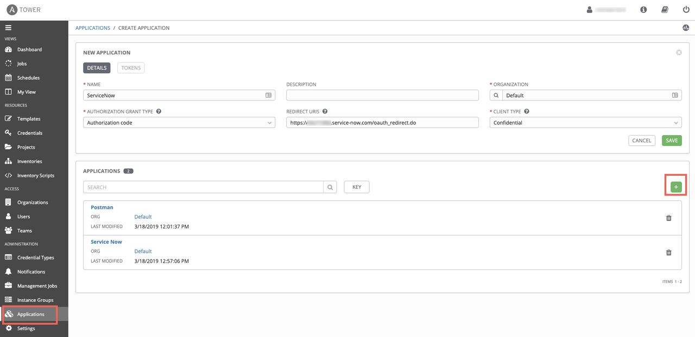
-
Click the green Save button on the right, at which point a window will pop up, presenting you with the Client ID and Client Secret needed for ServiceNow to make API calls into Ansible Tower. This will only be presented ONCE, so capture these values for later use.
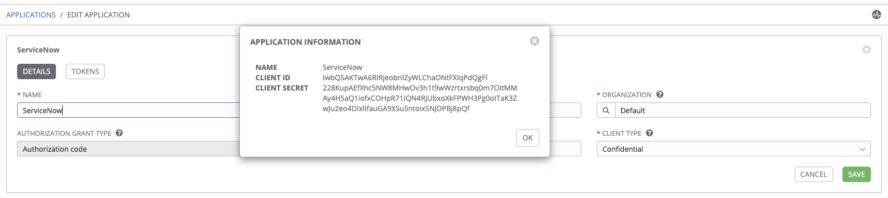
-
Next, navigate to Settings->System on the left side of the screen. You'll want to toggle the Allow External Users to Create Oauth2 Tokens option to on. Click the green Save button to commit the change.
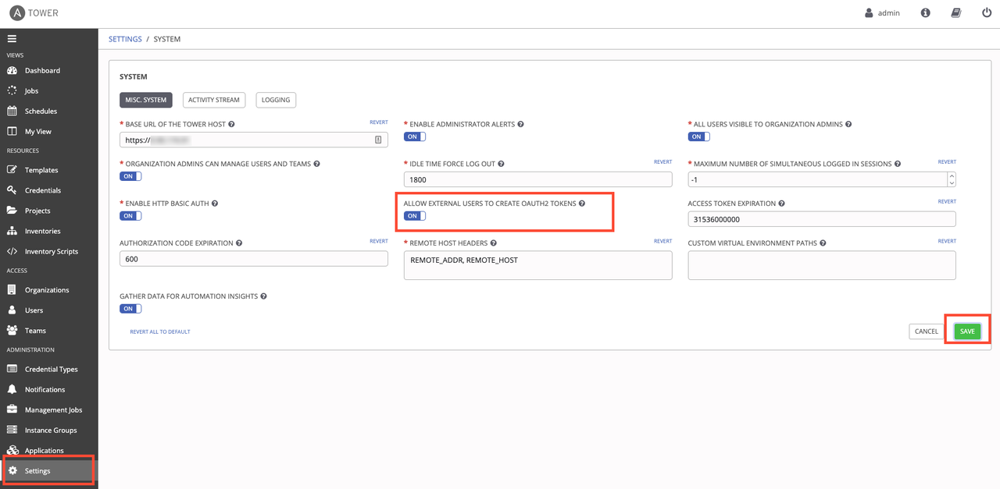
Preparing ServiceNow
-
Moving over to ServiceNow, Navigate to System Definition->Certificates. This will take you to a screen of all the certificates Service Now uses. Click on the blue New button, and fill in these details:
-
Name: Descriptive name of the certificate
- Format: PEM
- Type: Trust Store Cert
-
PEM Certificate: The certificate to authenticate against Ansible Tower with. You can use the built-in certificate on your Tower server, located at
/etc/tower/tower.cert. Copy the contents of this file into the field in ServiceNow.Click the Submit button at the bottom.
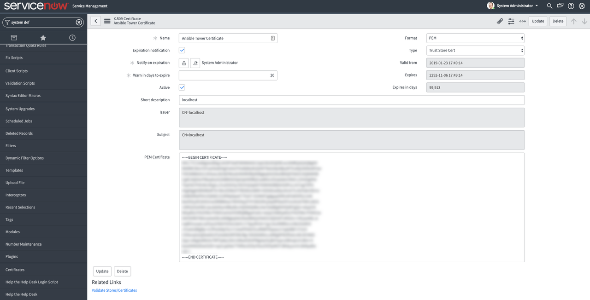
-
In ServiceNow, Navigate to System OAuth->Application Registry. This will take you to a screen of all the Applications ServiceNow communicates with. Click on the blue New button, and you will be asked What kind of Oauth application you want to set up. Select Connect to a third party Oauth Provider.
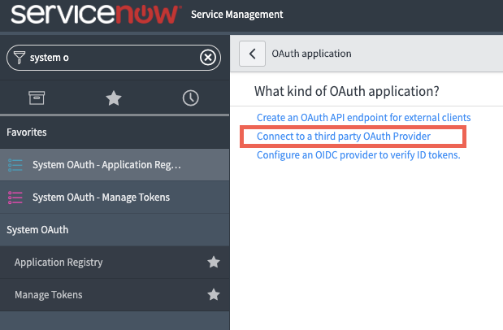
-
On the new application screen, fill in these details:
-
Name: Descriptive Application Name
- Client ID: The Client ID you got from Ansible Tower
- Client Secret: The Client Secret you got from Ansible Tower
- Default Grant Type: Authorization Code
- Authorization URL:
https://<tower_url>/api/o/authorize/ - Token URL:
https://<tower_url>/api/o/token/ -
Redirect URL:
https://<snow_instance_id>.service-now.com/oauth_redirect.doClick the Submit button at the bottom.
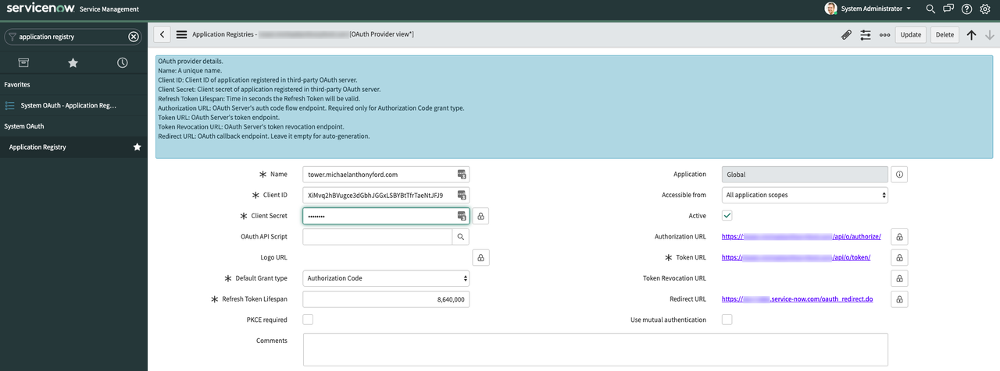
-
You should be taken out to the list of all Application Registries. Click back into the Application you just created. At the bottom, there should be two tabs: Click on the tab Oauth Entity Scopes. Under here, there is a section called Insert a new row.... Double click here, and fill in the field to say Writing Scope. Click on the green check mark to confirm this change. Then, right-click inside the grey area at the top where it says Application Registries and click Save in the menu that pops up.
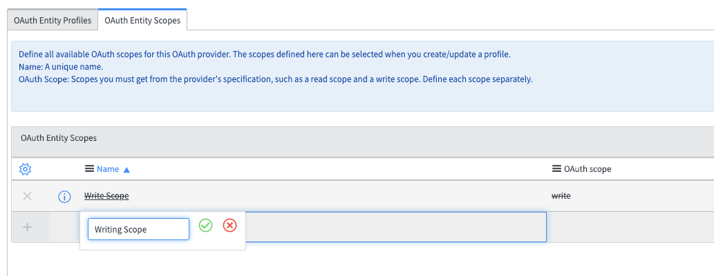
-
The writing scope should now be Clickable. Click on it, and in the dialog window that you are taken to, type write in the Oauth scope box. Click the Update button at the bottom.
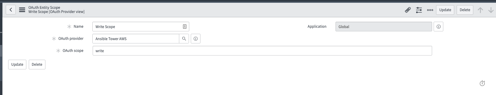
-
Back in the Application Settings page, scroll back to the bottom and click the Oauth Entity Profiles tab. There should be an entity profile populated - click into it.
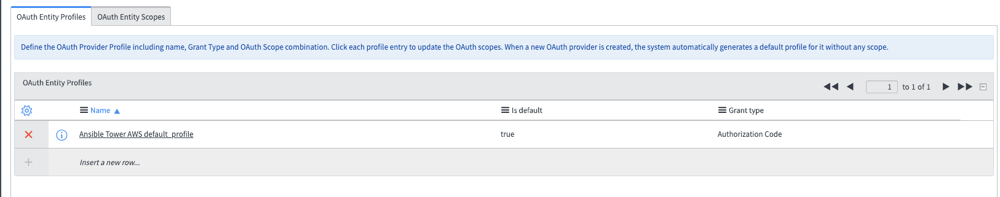
-
You will be taken to the Oauth Entity Profile Window. At the bottom, Type Writing Scope into the Oauth Entity Scope field. Click the green check mark and update.

-
Navigate to System Web Services -> REST Messages. Click the blue New button. In the resulting dialog window, fill in the following fields:
-
Name: Descriptive REST Message Name
- Endpoint: The url endpoint of the Ansible Tower action you wish to
do. This can be taken from the browsable API at
https://<tower_url>/api - Authentication Type: Oauth 2.0
-
Oauth Profile: Select the Oauth profile you created
Right-click inside the grey area at the top; click Save.

-
Click the Get Oauth Token button on the REST Message screen. This will generate a pop-up window asking to authorize ServiceNow against your Ansible Tower instance/cluster. Click Authorize. ServiceNow will now have an OAuth2 token to authenticate against your Ansible Tower server.
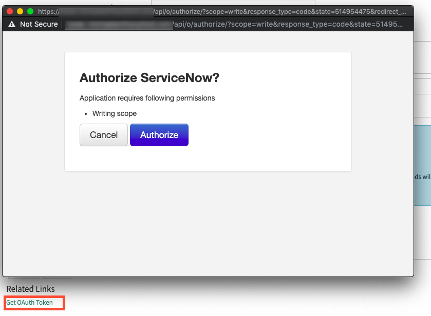
-
Under the HTTP Methods section at the bottom, click the blue New button. At the new dialog window that appears, fill in the following fields:
-
HTTP Method: POST
- Name: Descriptive HTTP Method Name
- Endpoint: The url endpoint of the Ansible Tower action you wish to do. This can be taken from the browsable API at
https://<tower_url>/api - HTTP Headers (under the HTTP Request tab)
- The only HTTP Header that should be required is Content-Type: application/json
You can kick off a RESTful call to Ansible Tower using these parameters with the Test link.
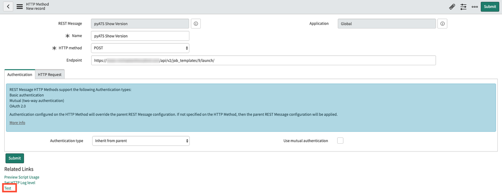
Testing connectivity between ServiceNow and Ansible Tower
Clicking the Test link will take you to a results screen, which should indicate that the Restful call was sent successfully to Ansible Tower. In this example, ServiceNow kicks off an Ansible Tower job Template, and the response includes the Job ID in Ansible Tower: 276.
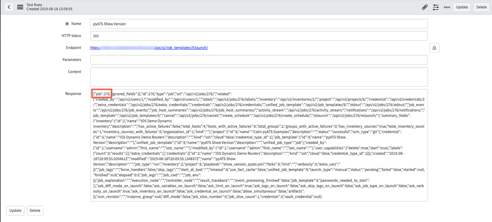
You can confirm that this Job Template was in fact started by going back to Ansible Tower and clicking the Jobs section on the left side of the screen; a Job with the same ID should be in the list (and, depending on the playbook size, may still be in process):
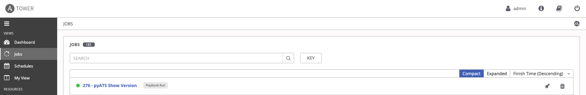
Creating a ServiceNow Catalog Item to Launch an Ansible Tower Job Template
Now that you are able to make outbound RESTful calls from ServiceNow to Ansible Tower, it's time to create a catalog item for users to select in ServiceNow in a production self-service fashion. While in the HTTP Method options, click the Preview Script Usage link:
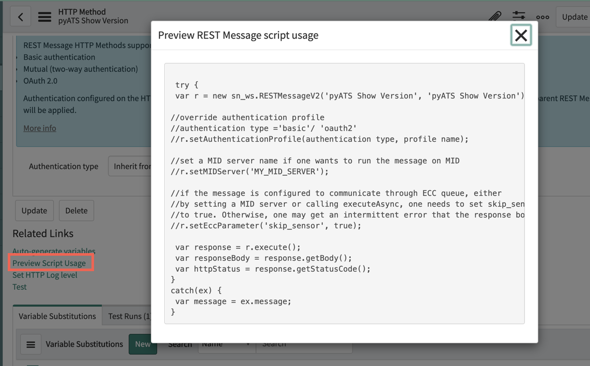
Copy the resulting script the appears, and paste it into a text editor to reference later.
-
In ServiceNow, navigate to Workflow -> Workflow Editor. This will open a new tab with a list of all existing ServiceNow workflows. Click on the blue New Workflow button:

-
In the New Workflow dialog box that appears, fill in the following options:
-
Name: A descriptive name of the workflow
-
Table: Requested Item
sc_req_itemEverything else can be left alone. Click the Submit button.

-
The resulting Workflow Editor will have only a Begin and End box. Click on the line (it will turn blue to indicate it has been selected), then press delete to get rid of it.
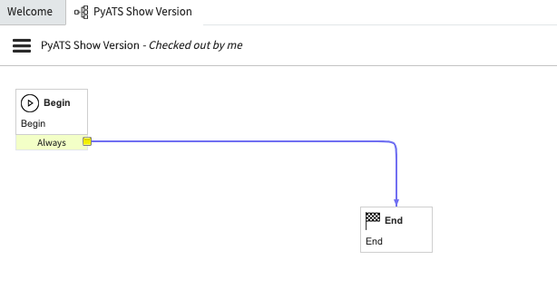
-
On the right side of the Workflow Editor Screen, select the Core tab and, under Core Activities->Utilities, drag the Run Script option into the Workflow Editor. In the new dialog box that appears, type in a descriptive name, and paste in the script you captured from before. Click Submit to save the Script.
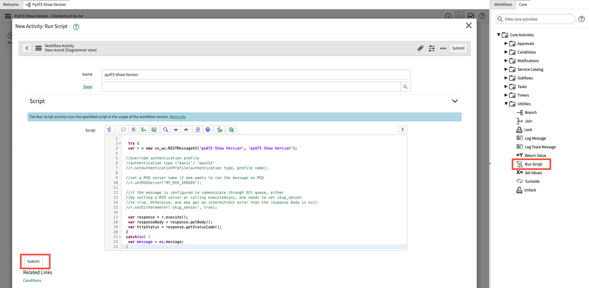
-
Draw a connection from Begin, to the newly created Run Script Box, and another from the Run Script box to End. Afterward, click on the three horizontal lines to the left of the Workflow name, and select the Publish option. You are now ready to associate this workflow with a catalog item.
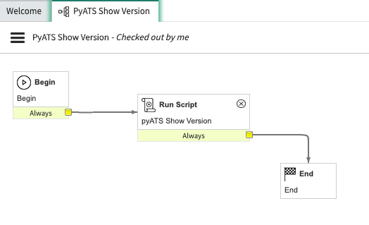
-
Navigate to Service Catalog -> Catalog Definitions -> Maintain Items. Click the blue New button on the resulting item list. In the resulting dialog box, fill in the following fields:
-
Name: Descriptive name of the Catalog Item
- Catalog: The catalog that this item should be a part of
-
Category: Required if you wish users to be able to search for this item
In the Process Engine tab, populate the Workflow field with the Workflow you just created. Click the Submit Button. You've not created a new catalog item!
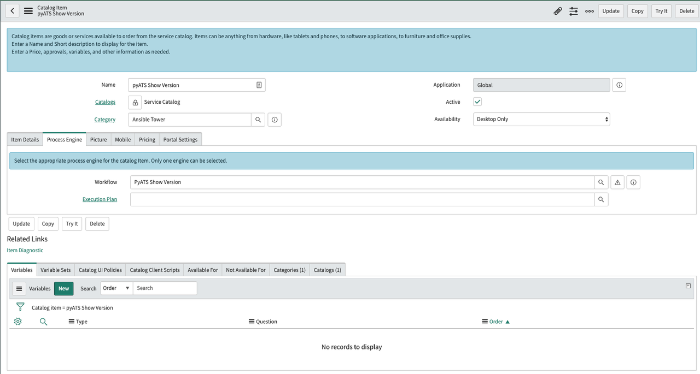
-
Lastly, to run this catalog item, navigate to Self-Service -> Homepage and search for the catalog item you just created. Once found, click the order now button. You can see the results page pop up in ServiceNow, and you can confirm that the Job is being run in Ansible Tower.
Congratulations! After completing these steps, you can now use a ServiceNow Catalog Item to launch Job and Workflow Templates in Ansible Tower. This is ideal for allowing end users to use a front end they are familiar with in order to perform automated tasks of varying complexities. This familiarity goes a long way toward reducing the time to value for the enterprise as a whole, rather than just the teams responsible for writing the playbooks being used.